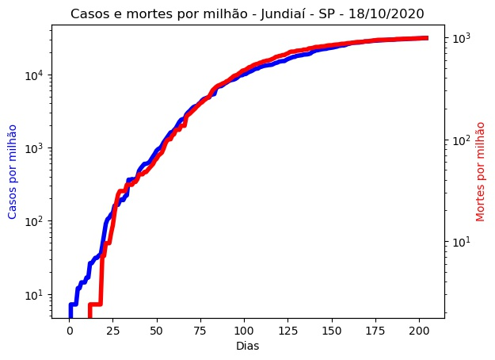

Jundiaí - SP - 18/10/2020.
Detalhes técnicos, aqui. Clique aqui para uma versão em PDF desta análise.
População: 418.962.
Início e fim da série: 2020-03-27 e 2020-10-17. (205 elementos - 29 semanas e 2 dias).
Número de casos totais e mortes: 13.139 e 415. (31.361 e 991 por milhão de habitantes, respectivamente.)
r0 (integral) efetivo médio (duas últimas semanas - três dias de atraso): 1,89 (std = 0,08).
Último intervalo para r0 (três dias de atraso): (1,88 : 1,89).
Limiar imunidade de grupo nR (baseado no valor de r0 (integral) efetivo médio) = 0,47.
Previsão do número total de casos para os próximos 5 dias: 13.170, 13.201, 13.233, 13.264, 13.296.
